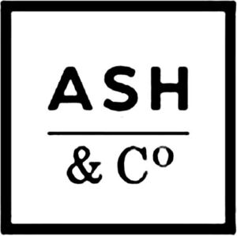

Trade Mark Journal No.2025/047 21 November 2025
WO0000001871747 (6,8,9,10,11,18,20,21,22,23,25,26)
Office of origin: Australia
Date of International Registration:16 June 2025
Date of designation in the UK:
16 June 2025

International priority date claimed: 16 December 2024
(Australia)
(2507296)
- Class 6
- Metal pegs; metal clothes hooks; shoe pegs and shoe dowels of metal; hooks of metal; cable ties of metal.
- Class 8
- Knives; knife sharpeners; household knives; knives being tableware; kitchen knives; fish knives; filleting knives; fish scalers; carving knives; fruit carving knives; chopping knives; cake knives; cake cutters; cutlery, forks and spoons; table cutlery; carving forks; meat forks; spreaders (cutlery); baby cutlery; scissors; scissors for kitchen use; scissors for household use; tongs, being hand-tools; pizza cutters; pizza slicers; hand-operated vegetable peelers; fruit peelers, non-electric; hand-operated vegetable slicers for household purposes; hand-operated vegetable shredders; vegetable choppers; vegetable corers; fruit corers; egg slicers [hand tools]; non-electric meat slicers; meat tenderizer, hand operated kitchen utensil; kitchen mandolines; fruit pitters, hand-operated; olive pitters, hand-operated; hand-operated pumps; manicure sets; manicure and pedicure sets.
- Class 9
- Thermometers, not for medical use; meat thermometers; kitchen scales; measuring cups; measuring cups for cooking; spaghetti measurers; timers; food timers; kitchen timers; kitchen timers, electronic; egg timers; chargers for mobile phones; wireless chargers; chargers for batteries; batteries and battery chargers; USB chargers; power packs [batteries]; electric charging cables; electronic cables; electric cables; power cables; computer cables; printer cables; USB cables.
- Class 10
- Baby teethers; teething rings incorporating baby rattles; massage apparatus and instruments; massage mitts, massage stones; massage rollers, foot massagers; massage sticks.
- Class 11
- Book lights; reading lights; USB-powered desktop lights; pocket torches, electric; rechargeable torches.
- Class 18
- Reusable shopping bags.
- Class 20
- Pegs, not of metal; hampers (baskets), not of metal, for the transport of items.
- Class 21
- Clothes pegs; covers for dishes; reusable silicone food covers; reusable silicone food covers for bowls, pots, pans and cups; toothpicks; splatter screens for kitchen use; mops; abrasive mitts for scrubbing the skin; abrasive sponges for exfoliating the skin; body sponges; bath sponges.
- Class 22
- Clothes lines [rope or cord]; clothes lines [rope or cord], being portable for travel; laundry bags; mesh lingerie bags for washing lingerie; cable ties, not of metal.
- Class 23
- Sewing thread and yarn.
- Class 25
- Baby bibs of silicone; shower caps; bathing caps.
- Class 26
- Decorative articles for the hair; hair ornaments; hair clips; hair curl clips; hair elastics; hair scrunchies; hair bands; hair colouring caps; hair rollers, electric and non-electric, other than hand implements; hair roller pins; hair pins; sewing kits; sewing needles.
A. Royale & Co (Aust) Pty Ltd
Representative: Kilburn & Strode LLP, Lacon London, 84 Theobalds Road, Holborn London WC1X 8NL UNITED KINGDOM